30 Setting the scene
“To find a form that accommodates the mess, that is the task of the artist now”
Drawing graphics involves choosing the variables to look at, deciding what raw data and statistics to display, and selecting plot types. Initial plots may benefit from changing the scales or transforming the variables. It might be useful to exclude some of the cases. It could be helpful to add models. All of these actions are concerned with the content of the graphic.
With graphics for exploration, analysts should have background knowledge about the data and the main aim is to make structural features stand out. Exploratory graphics need little text of any kind, possibly just variable labels and simple scaling. With graphics for presentation, more information is needed. Few viewers will have enough background information, so context must be provided to make the graphic understandable. Guidelines of a journal or organisation may demand particular formatting standards. Ideally graphics should be polished as well as informative. Whether graphics are drawn for exploration or presentation, it is sensible to avoid overcrowding within a plot and to avoid overcrowding of plots together.
The content itself, the data objects like points and lines, can be reformatted. Sizes, colouring, shapes, ordering can be changed, sometimes dependent on dataset variables. The framing of the content could be extended and amended: the axes, tickmarks, gridlines, background, text (title, caption, labels, legends, annotations), spacing, size, and aspect ratio. Colouring, size, width, typeface apply to many of these. Most of this kind of formatting is for refining graphics for presentation, but improving the look of graphics helps exploratory work too.
Exploratory graphics involves drawing large numbers of graphics (this cannot be said often enough). Software is not as supportive as it should be in handling many graphics. They need to be ordered, aligned, and arranged. Scales and colouring should be consistent. Graphics texts tend to give advice on drawing individual graphics, but much advice is also needed for drawing and organising sets of graphics.
Recognising information in data graphics is easier if the graphics are well displayed. It is best if they are carefully laid out with plenty of space, both within and around them, and that they are appropriately formatted. When actors prepare to put on a play, they rehearse the words first, the content, and then add actions, while the stage designer, light manager, costume manager, and other specialists organise how best to display the content and set the scene. It is all brought together for the performances.
There are two kinds of graphical scene setting, for exploration and for presentation. Although they are not distinct, it is helpful to think of them separately. Exploration benefits from flexible layouts and plenty of space, concentrating on overviews more than details. Scales and labels may be the only text needed. Formatting should be supportive and unobtrusive, ideally just using defaults, so that little, if anything, needs to be changed. Exploration is open and informal. Presentation requires precise layouts of specified sizes, using space efficiently, with detailed formatting and explanatory text including titles, captions, legends, annotations, accompanying comments and more. Presentation is closed and formal.
Exploration is at most a small group activity, involving only a few people who know the aims and background of the project. For presentation the audience is potentially huge and their interests, knowledge, and experience will vary. This chapter discusses four aspects of graphical scene setting to make the information in graphics stand out: scaling, formatting, space, and layout.
30.1 Scaling
“Success is a science; if you have the conditions, you get the result.”
Scaling is a mapping from a variable’s values to how they are represented in a display. The variable to be scaled may be part of the dataset or a statistic calculated from the data, perhaps a count or subgroup means. The mapping is a function for converting the values to the visual properties of the plot, including the limits of the range of data that will be included. The resulting scale is annotated with breaks (tickmarks) and labels to make it more readable. A variable can be transformed and then plotted or the variable can be plotted on a transformed scale.
Scaling sets the limits of a display. Anything outside the limits is not shown. One example is Figure 3.2, which is a histogram of movie lengths of up to 3 hours that excludes the 682 films with longer runtimes. Or limits cover a wider range than the data to provide more space or to include particular standard values. Figure 9.5 is drawn with a scale from 0 to 100% although the maximum upper limit of the confidence intervals is only just over 75%. The reason is to emphasise the full range of possible values and to make clear that most states opposed the measure. It is sometimes suggested that 0 should always be included on count and other scales. This is generally sound advice and is followed, for instance, in the first plot of Figure 21.12. There the intention is to show that the down race is slightly longer than the upper race and that there is variation in the distances up and down over the years, but that these differences are small compared to the overall race length. Using 0 as a baseline would not be as sensible in many of the other plots in Chapter 21. Displays of race times (such as Figures 21.6 and 21.14) and of race speeds (Figure 21.11) are designed to point out the differences in times and speeds, not the overall levels. Figures 21.11 and the left plot of 21.12 are shown again in Figure 30.1.
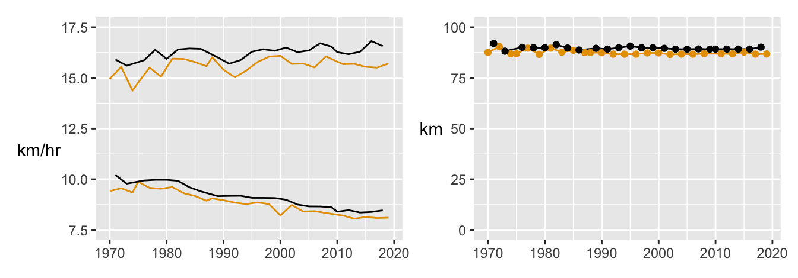
Figure 30.1: Average speed of the fastest runners (above) and median runners (below) in km/hr for the “up” (dark orange) and “down” (black) races, and distances in km for the “up” and “down” races, all since 1970
Outliers are a problem for scales. A single extreme outlier can stretch the limits and compress the rest of the data into a single, uninformative block (cf. the left plot in Figure 32.10). It will also affect boxplots, scatterplots, and parallel coordinate plots. This only applies to cases that are outliers on individual dimensions. Higher dimensional outliers (for instance, some of the cases revealed in Figure 11.6) do not affect graphics in this way.
Scales are for guidance not precision. Graphics are unsuitable for reading off individual values, although it is useful to know roughly what values apply. This is why the choice of units for scale labels is worth thinking about. The data displayed in Figure 3.1 are recorded in minutes up to 51420, not a number that makes sense to most readers. Converting the scale into weeks makes the plot more understandable with the maximum being just over 5 weeks. Similarly, Figure 10.6 uses a log scale for mission times and adds labels for recognisable lengths of time (hour, day, week) rather than marks equally spaced on the log scale.
Labelled breaks in scales aid understanding and offer points of reference. Too many can lead to crowding or even overplotting and too few do not offer enough assistance. The overall size chosen for a graphic has an influence and it can be curious to see what happens to scale labels when graphics are shrunk.
There are several ways a variable can contribute to a display including horizontal position (x-axis), vertical position (y-axis), pointsize, linewidth, colour, and alpha transparency. Some are easier to assess than others. As Cleveland & McGill (1987) and other research since have pointed out, lengths along a common scale are best for comparison. Pointsize and linewidth are useful for showing large differences, as in Figures 9.12 and 25.12 (pointsize), and Figures 2.10 and 8.9 (linewidth), but not for finer differentiation.
Some attributes have continuous scales, some are categorical, such as shape or linetype. Colour can be continuous (as in Figure 9.4) or discrete (Figure 26.7) or categorical (Figure 4.2). Alpha transparency is a valuable adjunct to colour for emphasising or de-emphasising particular features (e.g., Figure 8.17). The main use of colour is for categorical variables and is the subject of Chapter 29.
There were publications in the past suggesting methods for producing ‘optimal’ continuous scales. These usually produced exact numbers to several decimal places rather than interpretable round numbers. The term ‘pretty’ scales has emerged to describe the latter. There is no such research for categorical scales, although, as covered in Chapter 31, ordering of these scales makes a great deal of difference. When there are too many categories, some kind of aggregation is helpful. This was done in Figures 15.6 and 15.7 collecting the smallest groups into “Other”. Something similar was done in Figure 9.1, combining the oldest age groups into one of over 80.
There can be several scales in the same plot. Figure 8.12 uses two transformed variables (active chess players and grandmasters per million population), a regional colour coding, and pointsize proportional to population.
Context is important for specifying limits and breaks. In Chapter 17 on fuel efficiency of car models sold in the US, the values are reported in miles per gallon, so those have been used. Most other countries use litres per 100 kilometres. ‘Pretty’ scales would differ for the different units with the same data.
Variables representing dates and times bring their own issues. Months are of different lengths (even years are not always the same length). Should scales include Saturdays and Sundays if no data is recorded on those days? Conversely, for Figure 6.3, redrawn as Figure 30.2, missing values were added to the dataset for the Olympic Games that did not take place because of the World Wars. This was to ensure that gaps appeared in the time series to signify what had happened.
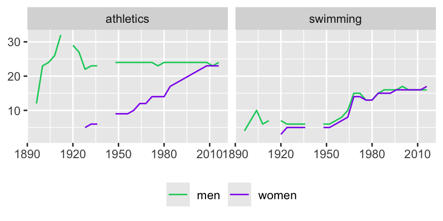
Figure 30.2: Numbers of athletics and swimming events for men and women at the Summer Olympics from 1896 to 2016
If scales are labelled by months, should the label be at the beginning of the month or the middle of the month? Again, much will depend on context. The level of detail of the labelling of time scales is problematic. The timing of the ballots at the Democratic Convention in 1912 was important, as can be seen in Figure 4.7. The times can be read from the dataset. Adding them to the graphic would overload the display and would add information that barely contributes more to what can be seen already.
Scales for spatial data are a quite separate matter. Maps can be drawn using any number of different projections. This does not affect most of Europe much, but has a big effect near the poles. Consider drawing a map of the Palmer Archipelago where the data used in Chapter 18 were studied.
Default scales drawn by software will usually be good for exploratory purposes for individual graphics. They will usually not be as good for comparing graphics. Then common scaling (i.e. using the same scale for comparable axes) will be more suitable. Figure 7.2 is an example where common scaling has been used for three histograms to emphasise the differences in the ranges of numbers of workers. In Figure 7.3 default scales have been used for studying the associations, if any, between the sectors. It is often useful to put vertical count axes on the same scale, as in Figure 23.1 where numbers may be compared across graphics as well as within since the graphics are all of the same dataset. Finally, if related variables are plotted together it makes sense to use a common scale (e.g., for the x and y axes of each plot in Figure 18.11). The default for drawing faceted graphics is common scaling, even if occasionally this is not what is wanted. Graphics are like that, there are always exceptions to any rule.
Common scaling has been used above to refer to using the same scale. It is better to think of it more generally as designing scales that support comparing variables. The transformations used to convert individual event performances in the Decathlon into points are an example (even if they do not work as well as desired, cf. Figure 31.5). Transformations for the axes of parallel coordinate plots are another, although it is more to do with treating variables equally than comparing them: variables can be transformed to [0,1], to z scores, to robust equivalents of z scores, to ranks.
Scales are needed immediately for drawing graphics. They may be amended after seeing the data. Reasons include making more space around the data, including special values, excluding outliers, and supporting comparisons. Overlaying graphical layers may require changes in limits if the range of the initial layer is not wide enough.
30.2 Formatting
“Accuracy is a duty, not a virtue.”
There are many formatting tools. Some affect content directly, some indirectly by changing the scene. It is easy enough to find advice on how to achieve particular effects, it is more relevant to think about why they are wanted. As Wilson et al. (2014) recommend in “Best Practices for Scientific Computing”: Document design and purpose, not mechanics.
Objects are made bigger to draw attention and made smaller to be less obvious. The overall effect depends on which objects are resized and by how much. Enlarging too much can lead to objects overlapping with loss of clarity. Shrinking too much can make some objects almost invisible. Space is increased between objects to make them more distinct.
Objects are coloured for several reasons (§29.3). Highlighting, colouring one group strongly, emphasises that group against the rest of the dataset. Alpha transparency plays down the impact of objects as in ghostplotting. It is also helpful for displaying point density in scatterplots of large datasets. Using colour and size consistently emphasises links and connections across displays. Common scaling, using the same scale for a variable in all plots in which it appears, ensures consistency of displays. Alignment of axes aids comparisons.
Text plays a major role in presentation graphics. There may be a caption, a title, a subtitle, variable labels, axis labels, legends, annotations (including case labels, line labels, numeric values). All these may be formatted, spaced, and positioned in a variety of ways. Few are needed for exploratory graphics and any formatting would be discreet and low-key.
There are so many formatting options for graphics that it can be difficult to see the wood for the trees. In 2006 the coffee chain Starbucks claimed that, including all variations, it offered 87,000 different drinks (this has not been independently verified (Bialik (2008))). Looking through long lists of graphics options that you have to decide on is not dissimilar. It is more important to know the effect you want to achieve and how the options are structured.
Objects representing the content of a graphic, like points or bars, and components that are part of the setting of a graphic, like axes or legends, can both be reformatted. Rather than content and setting, Wickham (2022) uses the terms data and non-data parts of a plot. Formatting can be structured in a number of ways. The approach described here works up from details of data to an overall view: Points, Plot, Position. Colour and ordering are especially important and are treated in detail in separate chapters.
30.2.1 Points, areas, lines, …
There are different levels of data that can be displayed: values for individual cases (e.g., as in scatterplots), aggregates (e.g., by category as in barcharts or by value as in histograms) or statistics (e.g., as in rates with confidence intervals by group). As always, boxplots are a mixture. They show individual outlying cases (if there are any), an aggregate (if the boxwidth is drawn proportional to group size), and five statistics.
Representations of cases may be formatted by colour, transparency level, shape, and size, either dependent on a variable or by direct assignment (when they are all the same colour). Edges may be coloured differently to the areas they border (this may also apply to points if they are drawn large enough). Edges and lines may be drawn in different forms (solid, dashed, dotted, …) and thicknesses. Multivariate glyphs may be defined as radar charts, rose diagrams, Chernoff faces or some other form.
The type of graphic chosen will determine how values are shown. Each case may be represented by a point in a scatterplot, by an area in a bar, by some other form of area, by a time series curve in a plot over time, by a polyline in a parallel coordinate plot, by a multivariate glyph. A variable may be weighted by another (numeric) variable.
The regions in Figure 2.7 could be weighted by population, as in Figure 2.8. Both plots are shown again in Figure 30.3. The rankings are quite different. Africa has the most countries, while Asia has the biggest population by far.
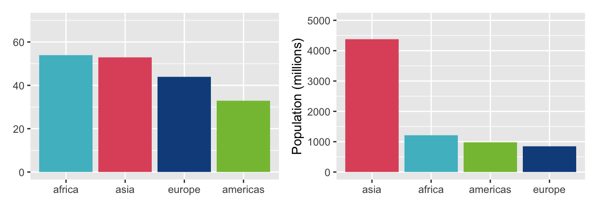
Figure 30.3: Barcharts of numbers of countries by region and populations in millions in 2016
The assignment of variables to axes will also affect a plot’s appearance, especially in multivariate plots such as parallel coordinate plots and mosaicplots. This also applies to faceted plots where each faceting variable may work either horizontally or vertically and the order of the faceting within the horizontal and vertical groupings matters.
Variables may be represented as given or may be transformed. Logarithms of positive skewed variables and model residuals are both transformations of data, if of very different kinds. Others include cumulative versions of variables, first differences or ranking, and there are many more. It may be productive to create new variables that are combinations of more than one of the original variables, such as differences, ratios, and sums.
Figure 30.4 shows barcharts of the change in population of regions by amount on the left and by percentage on the right. The changes in population over the 60 years from 1956 to 2016 are striking. Asia had the biggest increase in numbers, but Africa by far the biggest in percentage terms. Europe’s population increase is the lowest in absolute and percentage terms.
Code
pLES <- pLE %>% group_by(four_regions) %>% summarise(n=n(), p1956=sum(`1956`), p2016=sum(`2016`), popCh=p2016-p1956, popChp=100*popCh/p1956)
colsG <- c("#E0566B", "#85BF41", "#104E8B", "#4EBCCB")
names(colsG) <- c("asia", "americas", "europe", "africa")
c1 <- ggplot(pLES, aes(four_regions, weight=popCh)) + geom_bar(aes(fill=four_regions)) + xlab(NULL) + ylab(NULL) +
scale_fill_manual(values=colsG) + scale_y_continuous(breaks=seq(0, 3000000000, 500000000), labels=c(0, 500, 1000, 1500, 2000, 2500, 3000)) + theme(legend.position="none", plot.margin=margin(5.5, 25, 5.5, 5.5, "pt"))
c2 <- ggplot(pLES, aes(four_regions, weight=popChp)) + geom_bar(aes(fill=four_regions)) + xlab(NULL) + ylab(NULL) + scale_fill_manual(values=colsG) + theme(legend.position="none", plot.margin=margin(5.5, 5.5, 5.5, 25, "pt"))
c1 + c2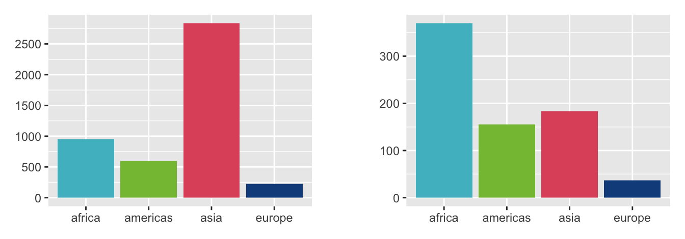
Figure 30.4: Barcharts of population changes by region between 1956 and 2016, absolute numbers in millions on the left, percentages on the right.
With point plots there can be multiple cases with the same values for the plot variables causing overplotting. This can occur with lines in a parallel coordinate plot or with multiple time series too. The order in which the cases (or lines) are plotted will affect how the display looks. Faceting can counteract overplotting, as in Figure 2.6.
The formatting alternatives in this section are predominantly about content and are relevant to both exploration and presentation.
30.2.2 Plot
There may be frames around a plot to clearly delineate its borders. How the frames are drawn, how much space there is between the plot and the frame, how much space there is between the frame and the total area allotted, all influence the look of a graphic. Needless to say, all these areas can be coloured differently, although that is seldom advisable. A soft, light colour for the area within the frame including the plot background is best.
Plots require axes and are mostly better with axis labels giving names to what is being shown. The axes should have appropriate limits and generally meet at the origin. How many tickmarks are drawn on an axis, where they are drawn, and how they are labelled must also be considered. Major and minor gridlines can be helpful in making comparisons, if drawn lightly on the background.
If bars or rectangles are drawn for categorical variables as in barcharts and mosaicplots, then their width, their individual aspect ratios, and the space between them matter. For mosaicplots it is common practice to increase the space from the lowest level to the highest.
If a plot is composed of different layers, as described in §28.5, then the order in which the layers are drawn will affect how the graphic looks. Alternative views can be offered by including or not including particular layers.
Individual plots can be given titles and subtitles. If colours, shapes, or sizes vary, then legends are necessary to describe the options shown. Special features in a plot can be annotated. All these texts should be in the same typeface, but the font and size may differ to reflect the importance of the texts. Too much text may divert attention from the graphics themselves. Legends, labels, annotations can be like subtitles in a film: having them can be helpful, reading them may be distracting.
These choices are part of a graphic’s setting, non-data formatting. They are incorporated in themes in the ggplot2 package. It is relatively easy to ensure a common standard across plots by specifying the same theme for all.
Four examples of well-known themes are shown in the next figure. They are distinctive and different, imitations of actual styles offered in the ggthemes package. Corresponding default colour palettes from the same package have been used. Experts from the organisations whose themes have been imitated would produce better displays using their own software.
Code
fr0 <- ggplot(pLES, aes(four_regions)) + geom_bar(aes(fill=four_regions, weight=n)) + xlab(NULL) + ylab(NULL)
frEx <- fr0 + scale_fill_excel_new() + theme_excel_new()
frG <- fr0 + scale_fill_gdocs() + theme_gdocs()
frW <- fr0 + scale_fill_wsj() + theme_wsj()
frEc <- fr0 + scale_fill_economist() + theme_economist()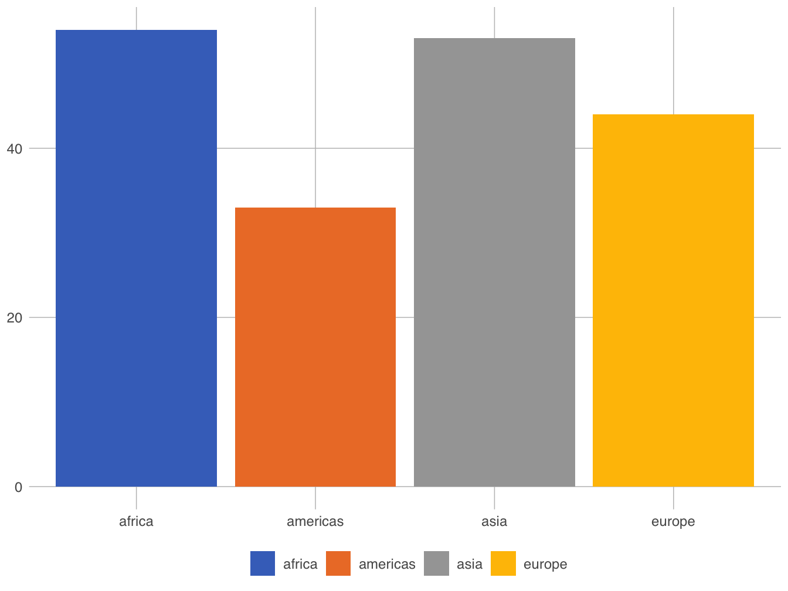
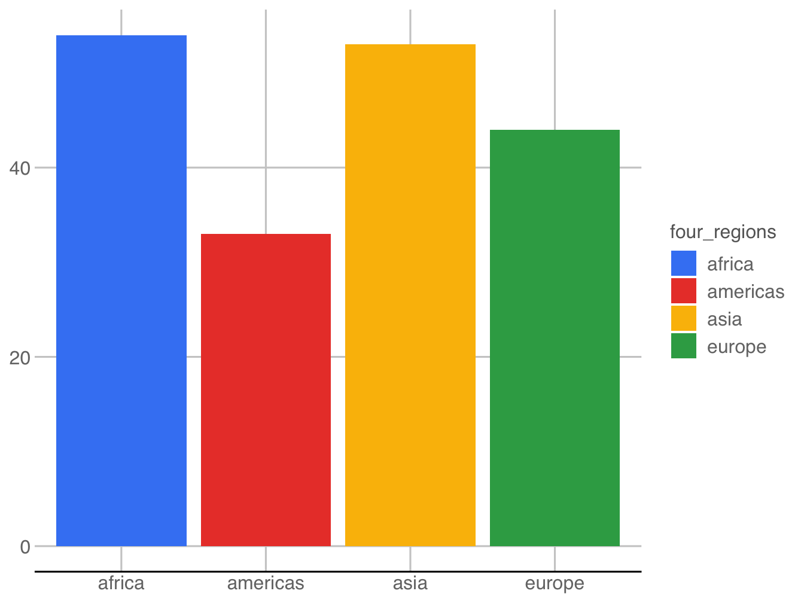
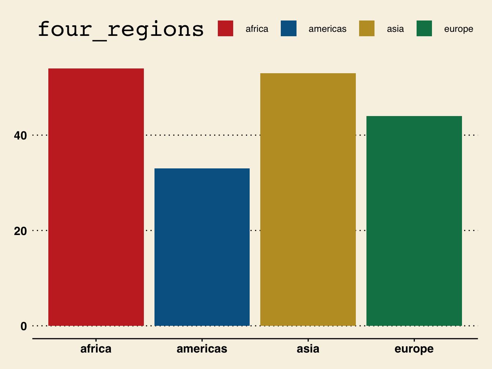
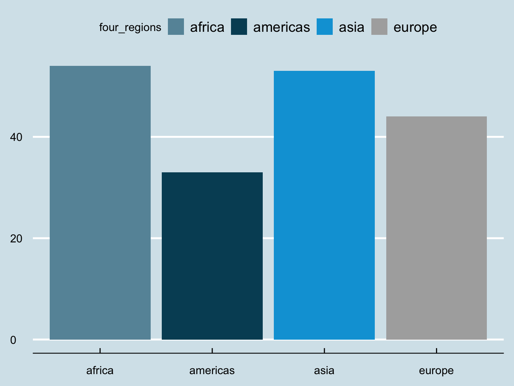
Figure 30.5: Barchart of population by region 2016 using four themes, Excel and Google docs (above), Wall Street Journal and Economist (below)
30.2.3 Position
A graphic or group of graphics can be placed at the top of a page, at the foot of a page, in the middle of text. A helpful rule for printed graphics is that the display is on the same page or on the facing page of the text accompanying it. Flicking between pages requires extra effort, increasing the cognitive load on readers (Ware (2020) and Munzner (2014)). They have to recall what was in the text when they look at the graphic, and remember what was in the graphic when they read the text.
HTML versions on electronic devices do not have an issue with paging. Instead the problem is more that different devices may have quite different screen sizes and shapes. Just because a plot looks good at one size says little about how good it may look at another size. Associated material, text or graphics, may or may not be visible.
When several graphics are drawn together in an ensemble it is necessary to arrange them and set the sizes of the individual graphics so that the information in them can be seen and the graphics fit together. This is automatically carried out for a group of graphics of the same size and shape by software offering faceting. Displaying a number of differently sized graphics is not unlike hanging paintings: horizontal and vertical axes should generally be aligned. Variables appearing in more than one graphic should have axes with identical scales (common scaling), as in Figures 18.1 to 18.4. This eases cognitive load when a viewer’s gaze moves from one graphic to another.
30.3 Making space
“The notes I handle no better than many pianists. But the pauses between the notes - ah, that is where the art resides.”
It is easier to pick out features if a display is uncluttered, with plenty of space around so that there are few distractions. As mentioned at the end of Chapter 29, pictures in art galleries and exhibitions were often hung closely together in the past, so that as many as possible could be shown. That made it awkward to inspect individual pictures, depending on how high or low they were hung, while neighbouring pictures would distract and interfere with the artist’s intentions. There is a story that Manet submitted pictures to the Salon, the premier art exhibition in Paris in the 19th century, that would stand out and be noticed under these conditions. Nowadays pictures are usually hung individually in their own space in galleries. It is similar for graphics, unless they are part of a coordinated ensemble. It is better that there is space around them, not just space around the overall graphic but space within the graphic around the main content as well.
A scatterplot matrix gives an overview of associations between several variables. If one of the scatterplots looks interesting, it is useful to be able to zoom in and check. In Figure 11.7 of diamond measurements several of the plots could be worth more attention, for instance the scatterplot table and carat shown enlarged in Figure 30.6. Two features already noted in other plots are visible here. Most of the table values are integers and there is heaping in the carat distribution that consequently has a slight sawtooth pattern (which is easier to see in the earlier histogram). Additionally, there are a few outliers that are probably errors, and there is no relationship between the two variables.
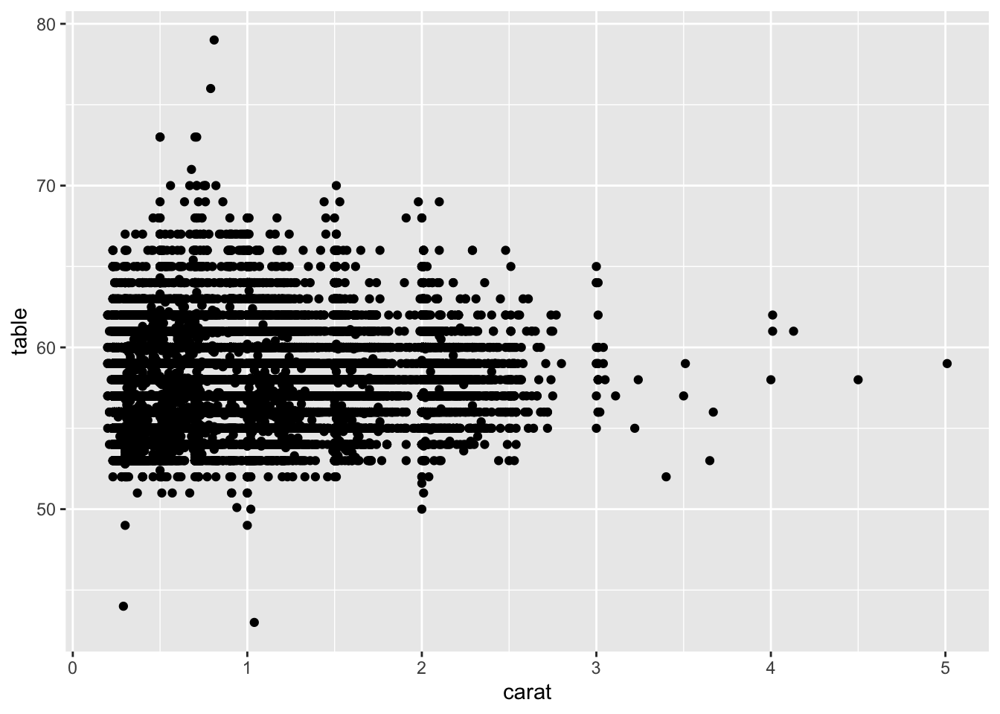
Figure 30.6: A scatterplot from the diamonds dataset of carat and table
Space is needed for distinguishing shapes and forms, and for studying features in combination. Empty space surrounding content is needed to discern what is there. There are trade-offs. The plot on the right of Figure 30.8 shrinks space around the point cloud to make more space between the points.
More space is needed for exploration than for presentation just as more space is needed for making a jigsaw than for displaying the finished picture. Jigsaw pieces need to be moved around, sorted, compared with others. Using graphics to explore data is similar (if without the certainty that a complete picture involving all the pieces will be possible).
Sometimes unrelated graphics are packed together. Sometimes axis limits are chosen that are too tight, so that a display seems cramped in its boundaries. Different text elements, whether titles, legends, labels, variables names or annotations, can be drawn too close to other display elements or even overlapping on top of them and affect perception detrimentally. Making a graphic bigger is a quick and simple way of counteracting or at least reducing any overlapping of points and labels.
Values drawn above bars can have the effect of artificially lengthening them, hindering proper comparisons. Borders may be drawn around graphics to separate them from text. This can also have the effect of appearing to constrain them. If a vertical axis is drawn at the left of a plot then a border to the right may be interpreted as a boundary of some kind.
An example of using internal spacing can be seen in doubledecker plots such as Figures 22.3 and 22.4 in Chapter 22 on checking Facial Recognition software. Another example from Chapter 9, Figure 9.3, is redrawn here as Figure 30.7.
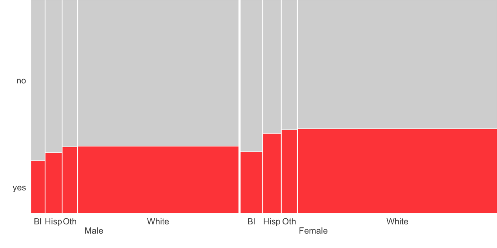
Figure 30.7: Support for same-sex marriage at state level by sex and race
Gaps between groups at the top level, in this case male and female, should be bigger than gaps between the individual groups at the next level down. If there is a further level down, then those gaps should be even smaller. The same goes for other forms of mosaicplots. The eye is good at picking out blocks of information when the separation between the blocks is supportive. It is similar for displays of small multiples or faceting. You need to be able to distinguish the individual plots while at the same time being able to make comparisons between them. This is a matter of fine judgement and experience, as with all effective displaying and interpreting of graphics.
30.4 Layout
“Life is like a 10-speed bike. Most of us have gears we never use.”
Layout of graphics is essential for presentation and important for exploration. Drawing a graphic includes choosing the size and aspect ratio and deciding where to place it in text or in relation to other graphics. In Exploratory Data Analysis graphics need to be resized and moved around to get a better look at them. Varying graphics changes the point of view, giving fresh impressions and drawing attention to other features. Single, fixed points of view are limiting. There are sound recommendations for drawing graphics, but other views suggest additional insights.
If two variables are measured the same way with the same limits, then scatterplots should be square. Figure 9.12 comparing percentage support for two statements on Gay Rights is an example. If default scales are used and the plot is drawn wider but less tall, then more individual states can be picked out. One state, which turned out to be Maine, had a relatively low support at state level given its level of opposition to a constitutional amendment. The two plots are shown together in Figure 30.8. The square plot on the left with equally scaled axes shows the different levels of support for the two opinions and the close association between them. The plot on the right emphasises individual states more and the overall structure less.
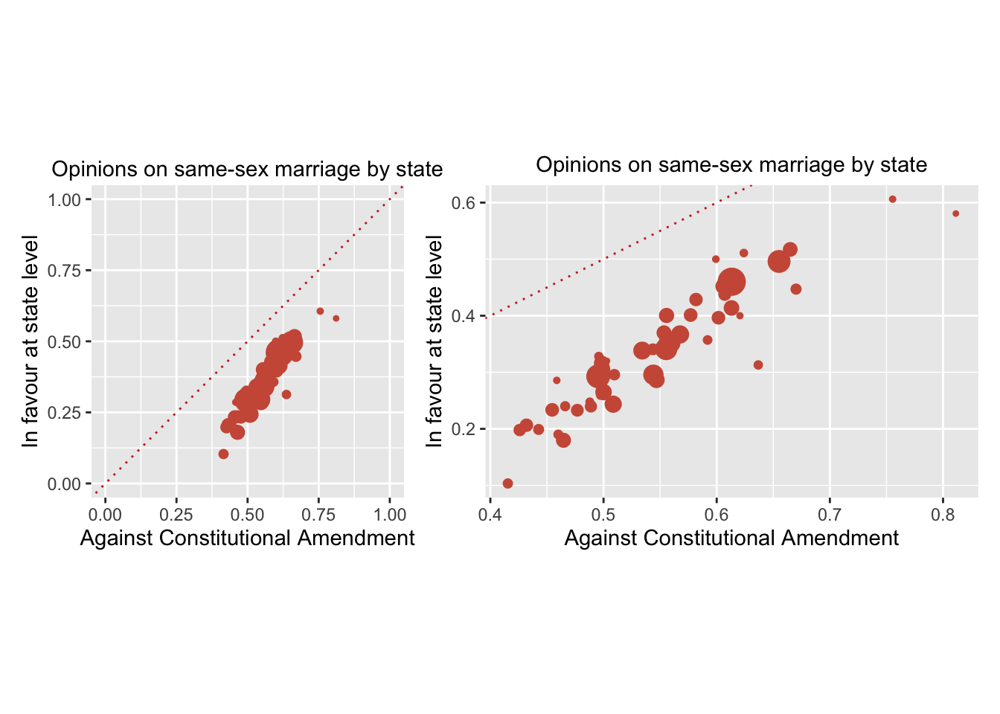
Figure 30.8: Scatterplot of responses to the two same-sex marriage questions by state with equal and default scales (point areas are proportional to the number of respondents in that state)
The plots in Figure 30.8 could be drawn with the variables switched and this would give another view of the data. When one of the two variables in a scatterplot is dependent on the other, then the convention is to put it on the vertical axis. Examples can be found in Figures 5.2, 8.17, and 26.8.
If two bars in a chart are close in height or if a bar is barely visible, then it helps to stretch the graphic to see which bar is bigger or how big the barely visible bar is (as in Figure 10.3). The same applies to histograms, particularly with possibly empty bins in the middle (as in Figure 11.5). Empty ranges near the extremes can be checked with boxplots (as in Figure 11.2 following Figure 11.1).
Barcharts are often better horizontally, making use of page width and allowing longer text labels for the bars. Figure 30.9 compares the horizontal version in Figure 8.11 with a vertical version. The left barchart emphasises the countries with most registered chess players. The right barchart emphasises how many players there are in countries not in the top thirty.
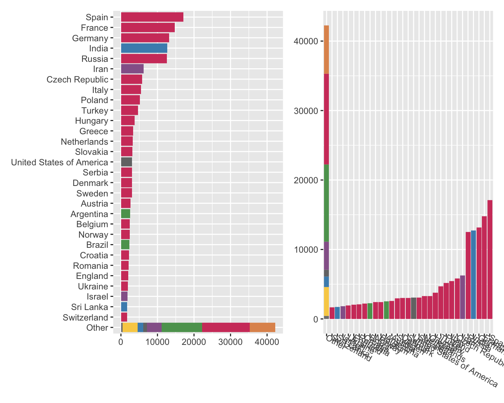
Figure 30.9: Barchart of numbers of chess players by country and region plotted horizontally and vertically
Boxplots and scatterplots can be transposed to give alternative views. Boxplot examples include Figures 3.1, 8.2, 8.6, 10.8, 17.3, and 20.4. In Figure 14.2, repeated here as Figure 30.10, the boxplots were rotated to make the labels more legible and to ensure only one set of labels was needed.
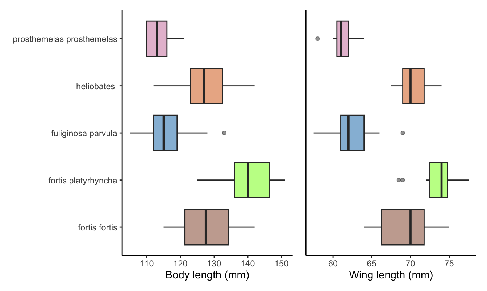
Figure 30.10: Body and wing lengths for the five species from Isabela Island
The scatterplots of associations between the numbers in the three sectors of the French workforce in Chapter 7 could be looked at the other way round. Figure 30.11 shows the first plot from Figure 7.3 on the left and a transposed version on the right. The first plot may emphasise the relatively low levels of the Industry numbers in most departments more, while the second may emphasise the two extreme Industry values more.
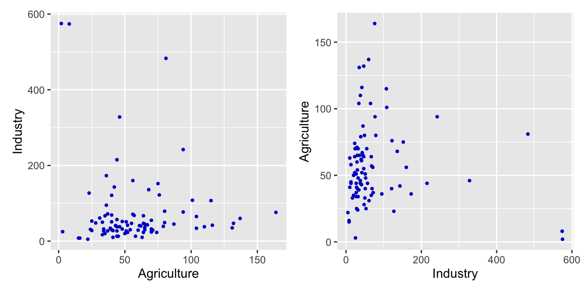
Figure 30.11: Scatterplot of numbers of Agriculture and Industry workers in France in 1954 plotted two ways
Another example can be seen in Figure 30.12 which shows Figure 9.12 on the left and a transposed version on the right. The greater support in all states for opposing a Constitutional Amendment looks more obvious in the plot on the right. Different people may respond to different shapes of features. There is no display that will be optimal for all. Best practice is to look at more than one.
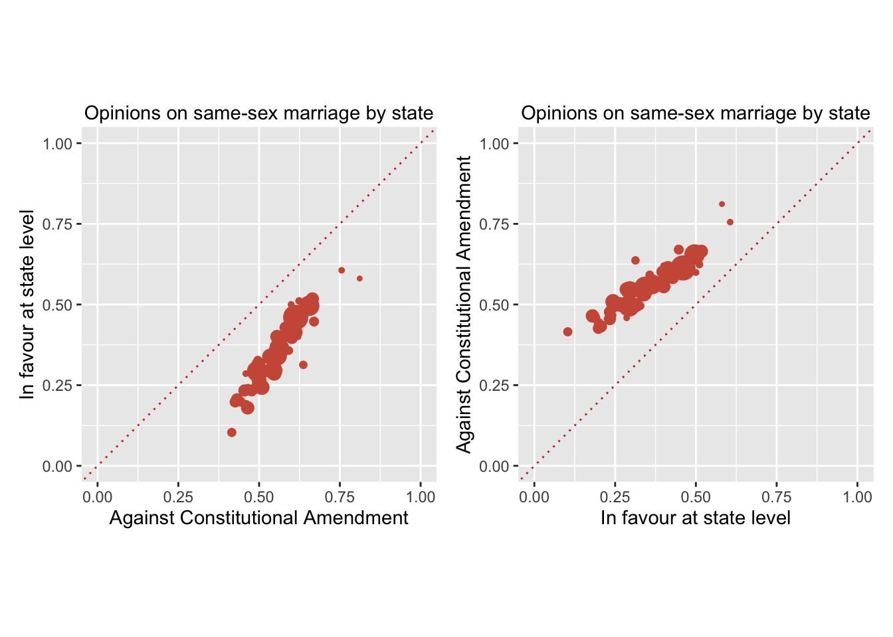
Figure 30.12: Scatterplot of responses to the two same-sex marriage questions by state plotted two ways (point areas are proportional to the number of respondents in that state)
Trying different layouts for single graphics is simple. Laying out several differently shaped graphics in an ensemble for presentation is harder (Unwin & Valero-Mora (2018)). Optimal sizes for individual plots may not be optimal for the ensemble as a whole. Other factors include aligning axes and using common scaling.
30.5 Comparisons and graphics
“Painting is easy when you don’t know how, but very difficult when you do.”
Looking at graphics involves making comparisons—comparisons with expectations, comparisons within graphics, comparisons between graphics. A well-structured layout helps.
30.5.1 Types of comparison
Comparisons may be made between different variables for the same individual cases. They could be different measures (e.g., Figure 14.4 and the top plot of Figure 33.2) or the same measure taken at different times (e.g., top right of Figure 12.1). The comparisons may be improved by looking at differences or ratios as well as the measures themselves.
Comparisons can be made between different subsets or groups, between one selection and the rest of the dataset, between a selection and the whole dataset. These comparisons may be made by distributional forms (Figures 8.9 and 8.14), by features (Figure 10.7) or by statistics (e.g., Figures 11.11, and 25.8, shown again in Figure 30.13).
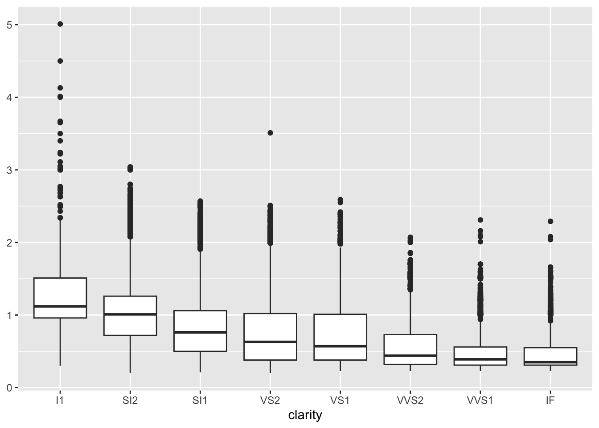

Figure 30.13: Diamond carats by clarity (left) and Titanic survival rates for passengers and crew (right)
In statistical analysis it is common to specify a particular comparison, for example whether two means can be taken to be equal or not. In exploratory analysis many comparisons are made, some explicit that are of interest in advance and some that arise because they stand out. There may be a large number of groups that could be compared in a large number of ways, as with the fuel efficiency data in Chapter 17.
Comparisons may be made with a variety of graphics, some perhaps more informative than others, but all contributing. In Chapter 26 the votes for parties in two German elections were initially compared by barcharts, then by a barchart of percentage changes between the elections, then by an UpAndDown plot of relative and absolute changes.
Comparisons must be made precise, both in the definitions of the groups being compared and in the features or statistics used to compare them, and they must be checked thoroughly (cf. §32.3).
30.5.2 Superposition, juxtaposition, and faceting
Graphics can be compared by putting them on top of one another (superposition) or by putting them beside or above one another (juxtaposition). Figure 8.3 juxtaposes histograms of chess ratings for active and inactive players picking out the peak at 2000 well. Figure 8.4 superposes density estimates of the same data showing the overall difference in distributions better, but the peak is harder to see. The plots are redrawn in Figure 30.14.
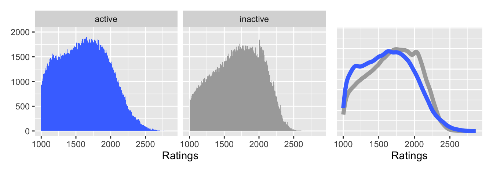
Figure 30.14: Juxtaposed histograms (left) and superposed density estimates (right) of ratings for active and inactive chess players
Colour (occasionally shape or form) can be used to distinguish the parts of superposed graphics. The order of drawing is crucial as the last group drawn will be on top (e.g., Figures 10.2 and 21.13). For comparisons of many groups, faceting by placing them on a grid is a practical alternative. Much depends on how separated the groups are.
Superposition is good for comparing time series that look similar (e.g., Figures 2.4 and 24.10), for comparing density estimates of different groups (e.g., Figure 8.15), and for scatterplots in which groups are separated (e.g., Figure 18.9). It is not effective when overlapping occurs, as with histograms or barcharts where juxtaposition is better (e.g., Figures 7.2 and 3.14).
Juxtaposition can be better for crowded scatterplots (e.g., Figure 4.4 rather than Figure 4.3, both shown again in Figure 30.15 with the slight change that the plot on the right now includes ghostplotting to provide context for the individual regions). The disadvantage of juxtaposition is the extra amount of space needed if all plots are full size.
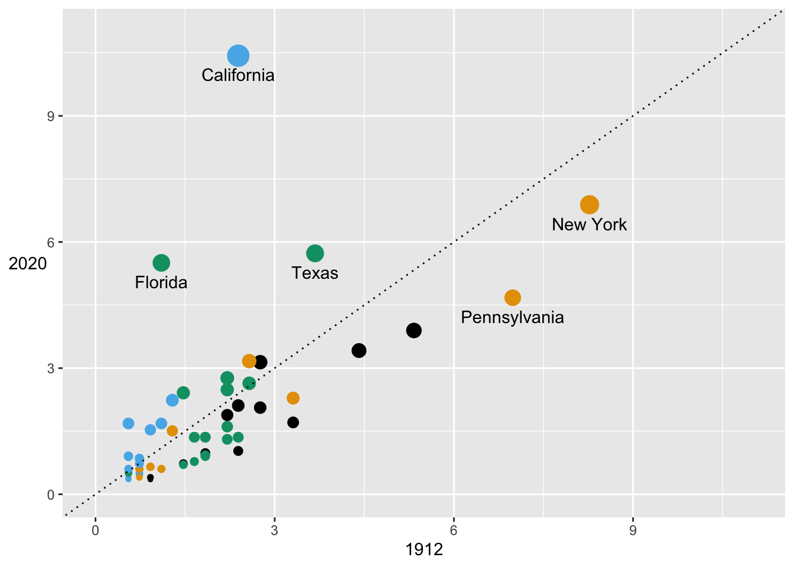
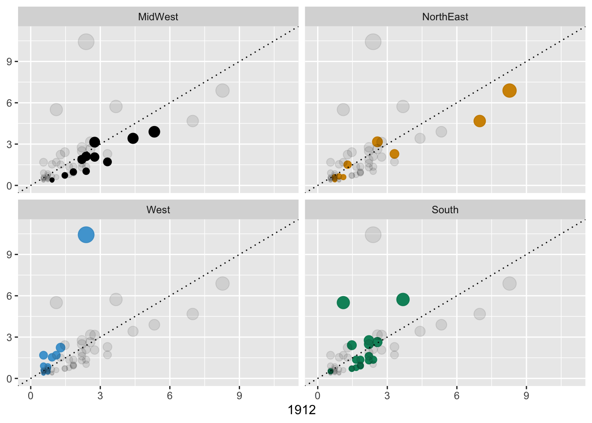
Figure 30.15: Percentage state shares of delegates at the 1912 and 2020 Democratic conventions (left) and by region (right)
Grids in faceting are constructed using conditioning. Order the conditioning variables and categories to place groups of interest together (Figure 23.4). Ghostplotting works well for faceted scatterplots by including comparisons of each individual group with the rest of the data.
These approaches are not mutually exclusive. Ghostplotting is often useful with faceting (e.g., Figure 18.10). Superposition and juxtaposition were used together in Figure 9.9. Figures 6.10 and 16.10 use superposition, ghostplotting, and juxtaposition.
30.5.3 Advice
Whichever objects are to be compared should generally be on the same scales, carefully aligned, and close together. Scales can be the same because they are measured in the same units, when differences in levels are emphasised (e.g., Figures 8.10 and 10.3, drawn again in Figure 30.16), or because they have been standardised to a common scale, when distributional shapes are compared (e.g., Figures 3.13 and 21.9). There are many possible standardisations (cf. §28.2.2).
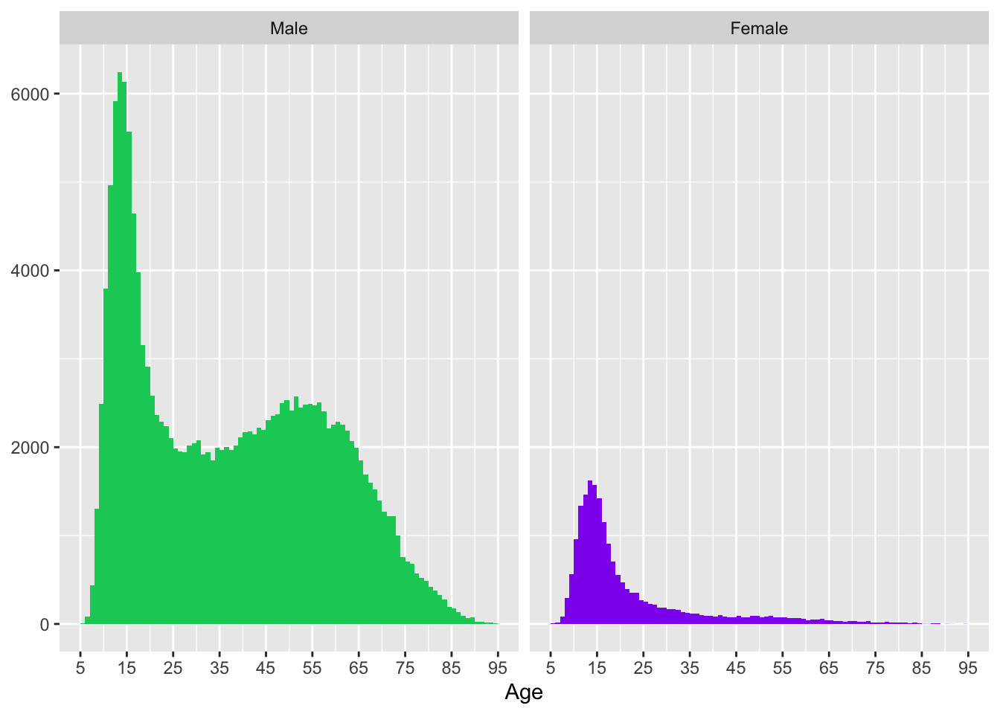
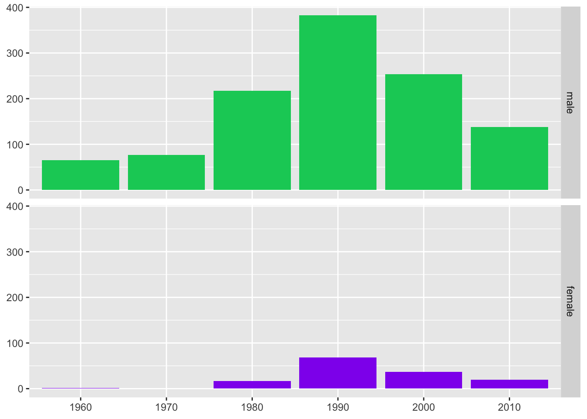
Figure 30.16: Age distribution of active players by sex (left) and numbers of spaceflight participants by decade and by sex (right)
Alignment of axes and placing objects together makes comparisons easier. The doubledecker plot of Titanic survival rates by passenger class and crew department in Figure 25.8 shows the higher survival rate of passengers over crew, the decline in survival rate by passenger class, and the relatively high rate of survival of the deck crew (because they manned the lifeboats).
30.6 Defaults
Software packages always offer default ways of drawing. With graphics there will be default sizes and aspect ratios, default point sizes and shapes, default scales, default axis and line thicknesses, default typefaces and fontsizes, default colour schemes. There are defaults of all kinds, many of which are rarely thought about—and may not need to be thought about often.
Descriptions of how the graphics in this book were drawn refer to using the defaults offered by or to changing them to achieve a particular effect. Different softwares have different defaults. Organisations define their own defaults to provide a consistent and uniform design. A newspaper looks different to other newspapers because it has its own standard layout and uses a specific typeface. Its graphics look different because they are drawn in a particular, consistent style.
The look of a graphic can be changed considerably by changing the defaults. What is ideal for some purposes may be not so good for others. Sophisticated packages offer complete control and, consequently, can be complex to use. If many graphics are drawn quickly to explore data, the defaults should be sensible, so that time does not have to be spent making adjustments. Analysts should be able to concentrate on content, not on details of presentation.
Main points
- Scaling, formatting, space, and layout all influence how information stands out.
- Scales should be readable and meaningful.
- There are many formatting tools. Think about what effect they will have before using them.
- Space is needed around features to see information.
- Comparisons benefit from common scales, appropriate alignment, and closeness.